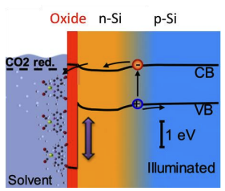
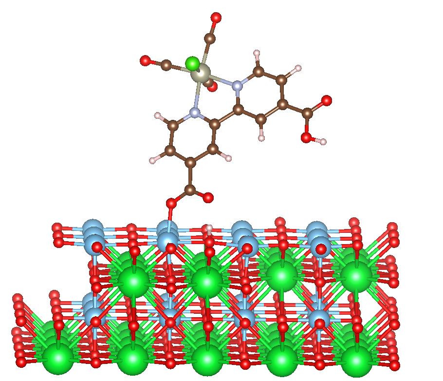
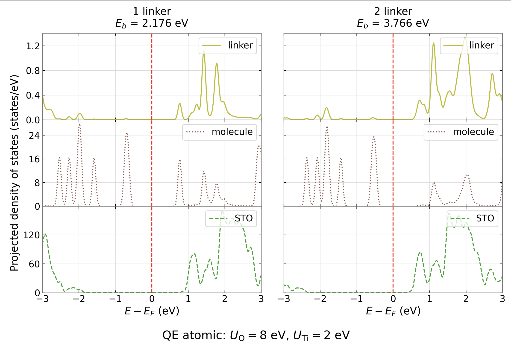

01 · Start here
Frequently asked questions
These answers summarize the talk. Open a question, then follow its links to figures and sources.
The project
What question is this project trying to answer?
Which attachment geometries bind, and how does the first molecular accepting state sit relative to the STO conduction edge?
Question guiding the interface calculations.
What is the proposed photocatalytic system?
The proposed architecture combines a semiconductor, an STO oxide layer, an attached Re(bpy)(CO)₃Cl-derived molecular catalyst, and a solvent environment. The arrows in the band diagram mark an intended charge pathway; the preliminary electronic-structure calculations do not measure its transfer rate.

What product is the project aiming toward?
The catalyst can reduce CO₂ to CO and HCO₂H. The longer-term goal described for this talk is to extract CO and convert it to fuel. Fuel production is not a result of the interface calculations.
Is acetonitrile included in the preliminary calculations?
Acetonitrile is the proposed operating medium. The descriptor and full-interface calculations shown here are solvent-free, so they do not yet quantify how acetonitrile changes binding or level alignment.
What did previous work establish?
Prior studies motivate three components separately: Re molecular CO₂ reduction, attachment of related catalysts to TiO₂-based surfaces, and charge transport through a GaAs/STO photoelectrode for hydrogen production. Their geometries, reactions, and solvent conditions differ from the proposed interface.
See Hawecker et al. (1983), Ge et al. (2018), and Kornblum et al. (2017) in References.
The calculations
Which calculations address the research question?
- Gas-phase descriptor binding to the isolated Re catalyst.
- Formic acid on STO as an attachment model, followed by one- and two-attachment Re/STO geometries.
- Projected densities of states to compare molecular and oxide accepting states and their sensitivity to the oxide treatment.
The interface structures and level offsets are preliminary.
What do the one- and two-attachment models compare?
They attach the same two-COOH catalyst through one or both carboxyl groups. Preliminary calculations give total adsorption energies of 1.949 eV and 2.942 eV on exploratory two-layer STO slabs. The comparison depends on its stated energy reference and needs thicker-slab checks.
Why compare DFT+U settings?
Bulk STO gaps and interface projections depend on both U and the orbital projector. The corrected slide 21 uses QE atomic projectors at U(O)=8 eV and U(Ti)=2 eV. Slide 22 is still being updated; comparing the settings will test whether the molecular–oxide state ordering is robust.
Scope and next steps
What are the main limits of the preliminary interface results?
The interface models use exploratory two-layer slabs. Slide 21 has a corrected QE atomic projection, while slide 22 remains pending. The new slide 21 state ordering is preliminary until the underlying calculation and convergence settings are checked. Separate-cell energy zeros need an alignment procedure before absolute comparison. These calculations do not yet establish a transfer rate.
What is the BaTiO₃ direction?
It is a proposed second direction on the electro-optic response of BaTiO₃. The first step is to define the target observable, phase, orientation, strain, and mechanical boundary condition, then benchmark undoped BaTiO₃ before studying Er/Yb sites and compensating defects. The two properties of interest are Er/Yb-related light emission and the electric-field-induced change in refractive index.
Calculated structures or energies that need the stated convergence and method checks.
A result reported by another group. Its materials and conditions are identified in the source citation.
A calculation or comparison planned to settle a present uncertainty.
02 · During the exam
Slide index
Search the current 28-slide deck by number or topic.
03 · This work · preliminary
Explore the interface results
These controls compare calculated models. They change the displayed figure and written interpretation; they do not simulate electron-transfer dynamics.
Attachment geometry

The one-attachment structure has a reported total adsorption energy of 1.949 eV on the tested STO slab. This is a total-energy result, not a transfer rate.
Open full-size geometry imageCorrected interface projection · slide 21

In this corrected calculation, the projected-state ordering differs between the one- and two-attachment models. The plot supports a qualitative within-calculation comparison; it does not provide an electron-transfer rate. Its binding-energy labels should be kept separate from the earlier PBE adsorption energies shown above.
Open full-size corrected projectionSlide 22 remains pending. Its earlier interface PDOS panel and numerical offset are withdrawn until a corrected replacement is reviewed. The former slide 21 panel is also superseded by the corrected figure above.
04 · Methods and limits
How the calculations answer the question
Each derivation is short here. The full presentation and backups carry the details, variable definitions, and convergence questions.
Ground-state DFT
The exact ground-state energy is written as a functional of the electron density. Practical Kohn–Sham calculations use an approximation for exchange and correlation; the preliminary calculations use PBE.
E[n] = F[n] + ∫ vext(r)n(r) dr
A Kohn–Sham eigenvalue gap is not automatically an optical excitation or a measured redox energy. Hohenberg & Kohn (1964) and Kohn & Sham (1965) are the foundational sources.
DFT+U and orbital projectors
The Dudarev correction depends on a projected occupation matrix. Atomic and orthogonalized atomic projectors define different local subspaces, so a numerical U value must be interpreted with its projector choice.
EDFT+U = EDFT + (Ueff/2) Tr[n − n²]
Shown for one corrected subspace; the full expression sums over sites and spin. Source: Dudarev et al. (1998).
What PDOS can and cannot show
Projected DOS indicates the energy and selected atomic or orbital character of calculated states. Comparing the first molecular and oxide unoccupied features motivates a transfer hypothesis. Establishing a rate also requires electronic coupling, nuclear and solvent reorganization, occupations, and competing pathways.
Within one interface calculation, the relative state order can be read directly. Plots from separate cells need an alignment procedure before their absolute energies are compared.
05 · Proposed second direction
BaTiO₃ and the Pockels response
A slowly varying electric field changes the optical impermeability of a noncentrosymmetric crystal and therefore its refractive index. Published calculations provide phase-specific undoped BaTiO₃ baselines. The Er/Yb-doped comparison is proposed work.
η = (εoptrelative)−1; rijk = ∂ηij/∂Ek at E=0
Baseline before dopants
- Specify the measured target, crystal phase, orientation, strain, domains, and mechanical boundary condition.
- Benchmark the undoped structure and electro-optic response.
- Compare plausible Er/Yb sites and charge-compensating defects.
- Only then test a doped response for the defined observable.
What the literature establishes
Paoletta & Demkov (2021) study low-temperature rhombohedral BaTiO₃; Kim et al. (2023) study tetragonal BaTiO₃. Their phase-specific results cannot be transferred to an unspecified doped film. Zhang et al. (2000) report Er-related near-infrared emission, a different observable from Pockels modulation.
What do the final doping and timeline slides claim?
Er³⁺ emission near 1.54 µm and Yb³⁺ sensitization have published precedent, but retention of the tetragonal ferroelectric phase and any change in Pockels response are proposed tests. Compare Er³⁺/Yb³⁺ substitution on Ba²⁺ or Ti⁴⁺ sites with charge compensation. The 0–6 month timeline begins with undoped BaTiO₃ validation, then candidate defect models, then orientation-dependent electro-optic predictions compared with experiment.
Background sources: Zhang et al. (2000), Lou et al. (2020), and Paoletta & Demkov (2021).
06 · Questions from visitors
Question box
Questions and feedback are encouraged!
07 · Sources
References
Sources used in the slides and this guide.
- National Energy Technology Laboratory. Guidelines/Handbook for the Design of Modular Gasification Systems. Technical report, U.S. Department of Energy, National Energy Technology Laboratory (2022). Handbook.
- Jeannot Hawecker, Jean-Marie Lehn, and Raymond Ziessel. “Efficient photochemical reduction of CO₂ to CO by visible light irradiation of systems containing Re(bipy)(CO)₃X or Ru(bipy)₃²⁺–Co²⁺ combinations as homogeneous catalysts.” Journal of the Chemical Society, Chemical Communications, 536–538 (1983). doi:10.1039/C39830000536.
- Christopher D. Windle, Ernest Pastor, Alice Reynal, Adrian C. Whitwood, Yana Vaynzof, James R. Durrant, Robin N. Perutz, and Erwin Reisner. “Improving the photocatalytic reduction of CO₂ to CO through immobilisation of a molecular Re catalyst on TiO₂.” Chemistry – A European Journal 21, 3746–3754 (2015). doi:10.1002/chem.201405041.
- Aimin Ge, Pablo E. Videla, Benjamin Rudshteyn, Qiliang Liu, Victor S. Batista, and Tianquan Lian. “Dopant-dependent SFG response of rhenium CO₂ reduction catalysts chemisorbed on SrTiO₃ (100) single crystals.” The Journal of Physical Chemistry C 122, 13944–13952 (2018). doi:10.1021/acs.jpcc.8b01123.
- L. Kornblum, D. P. Fenning, J. Faucher, J. Hwang, A. Boni, M. G. Han, M. D. Morales-Acosta, Y. Zhu, E. I. Altman, M. L. Lee, C. H. Ahn, F. J. Walker, and Y. Shao-Horn. “Solar hydrogen production using epitaxial SrTiO₃ on a GaAs photovoltaic.” Energy and Environmental Science 10, 377–382 (2017). doi:10.1039/C6EE03170F.
- Li Ji, Martin D. McDaniel, Shijun Wang, Agham B. Posadas, Xiaohan Li, Haiyu Huang, Jack C. Lee, Alexander A. Demkov, Allen J. Bard, John G. Ekerdt, and Edward T. Yu. “A silicon-based photocathode for water reduction with an epitaxial SrTiO₃ protection layer and a nanostructured catalyst.” Nature Nanotechnology 10, 84–90 (2015). doi:10.1038/nnano.2014.277.
- Max Born and Robert Oppenheimer. “Zur Quantentheorie der Molekeln.” Annalen der Physik 389(20), 457–484 (1927). doi:10.1002/andp.19273892002.
- P. Hohenberg and W. Kohn. “Inhomogeneous electron gas.” Physical Review 136, B864–B871 (1964). doi:10.1103/PhysRev.136.B864.
- W. Kohn and L. J. Sham. “Self-consistent equations including exchange and correlation effects.” Physical Review 140, A1133–A1138 (1965). doi:10.1103/PhysRev.140.A1133.
- John P. Perdew, Kieron Burke, and Matthias Ernzerhof. “Generalized gradient approximation made simple.” Physical Review Letters 77, 3865–3868 (1996). doi:10.1103/PhysRevLett.77.3865.
- Klaus van Benthem, Christian Elsässer, and Roger H. French. “Bulk electronic structure of SrTiO₃: Experiment and theory.” Journal of Applied Physics 90(12), 6156–6164 (2001). doi:10.1063/1.1415766.
- S. L. Dudarev, G. A. Botton, S. Y. Savrasov, C. J. Humphreys, and A. P. Sutton. “Electron-energy-loss spectra and the structural stability of nickel oxide: An LSDA+U study.” Physical Review B 57, 1505–1509 (1998). doi:10.1103/PhysRevB.57.1505.
- John A. Keith, Kyle A. Grice, Clifford P. Kubiak, and Emily A. Carter. “Elucidation of the selectivity of proton-dependent electrocatalytic CO₂ reduction by fac-Re(bpy)(CO)₃Cl.” Journal of the American Chemical Society 135(42), 15823–15829 (2013). doi:10.1021/ja406456g.
- Martin Pižl, Alessandra Picchiotti, Mateusz Rebarz, Nils Lenngren, Yingliang Liu, Stanislav Záliš, Miroslav Kloz, and Antonín Vlček. “Time-resolved femtosecond stimulated Raman spectra and DFT anharmonic vibrational analysis of an electronically excited rhenium photosensitizer.” The Journal of Physical Chemistry A 124(7), 1253–1265 (2020). doi:10.1021/acs.jpca.9b10840.
- Andrea Cannizzo, Ana M. Blanco-Rodríguez, Amal El Nahhas, Jan Šebera, Svatopluk Záliš, Antonín Vlček, and Majed Chergui. “Femtosecond fluorescence and intersystem crossing in rhenium(I) carbonyl–bipyridine complexes.” Journal of the American Chemical Society 130, 8967–8974 (2008). doi:10.1021/ja710763w.
- A. V. Müller, W. M. Wierzba, L. G. A. do Nascimento, J. J. Concepcion, S. Nikolaou, D. E. Polyansky, and A. S. Polo. “Tuning the photocatalytic CO₂ reduction through para-substituents in bipyridyl rhenium complexes.” Artificial Photosynthesis 1, 214–225 (2025). doi:10.1021/aps.4c00026.
- Q. Qu, H. Geng, R. Peng, Q. Cui, X. Gu, F. Li, and M. Wang. “Chemically binding carboxylic acids onto TiO₂ nanoparticles with adjustable coverage by solvothermal strategy.” Langmuir 26(12), 9539–9546 (2010). doi:10.1021/la100121n.
- Therese Paoletta and Alexander A. Demkov. “Pockels effect in low-temperature rhombohedral BaTiO₃.” Physical Review B 103, 014303 (2021). doi:10.1103/PhysRevB.103.014303.
- H. X. Zhang, C. H. Kam, Y. Zhou, X. Q. Han, Q. Xiang, S. Buddhudu, Y. L. Lam, and Y. C. Chan. “Photoluminescence at 1.54 μm in sol-gel-derived, Er-doped BaTiO₃ films.” Journal of Alloys and Compounds 308(1–2), 134–138 (2000). doi:10.1016/S0925-8388(00)00915-4.
- Yang Lou, Yang Chen, Chengzhen Liu, Ping Chen, Ruoyu Jia, Xiaofen Liu, Luyun Yang, Jinyan Li, and Nengli Dai. “Temperature induced modulation of near-infrared photoluminescence in BaTiO₃:Er.” Journal of Luminescence 223, 117220 (2020). doi:10.1016/j.jlumin.2020.117220.
- I. Kim, T. Paoletta, and A. A. Demkov. “Nature of electro-optic response in tetragonal BaTiO₃.” Physical Review B 108, 115201 (2023). doi:10.1103/PhysRevB.108.115201.
- J. Hawecker, J.-M. Lehn, and R. Ziessel. “Photochemical and electrochemical reduction of carbon dioxide to carbon monoxide mediated by (2,2′-bipyridine)tricarbonylchlororhenium(I) and related complexes as homogeneous catalysts.” Helvetica Chimica Acta 69, 1990–2012 (1986). doi:10.1002/hlca.19860690824.
- G. Kresse and J. Furthmüller. “Efficient iterative schemes for ab initio total-energy calculations using a plane-wave basis set.” Physical Review B 54, 11169–11186 (1996). doi:10.1103/PhysRevB.54.11169.
- P. Giannozzi et al. “QUANTUM ESPRESSO: a modular and open-source software project for quantum simulations of materials.” Journal of Physics: Condensed Matter 21, 395502 (2009). doi:10.1088/0953-8984/21/39/395502.
- P. Giannozzi et al. “Advanced capabilities for materials modelling with Quantum ESPRESSO.” Journal of Physics: Condensed Matter 29, 465901 (2017). doi:10.1088/1361-648X/aa8f79.
- B. J. Brennan, M. J. Llansola Portolés, P. A. Liddell, T. A. Moore, A. L. Moore, and D. Gust. “Comparison of silatrane, phosphonic acid, and carboxylic acid functional groups for attachment of porphyrin sensitizers to TiO₂ in photoelectrochemical cells.” Physical Chemistry Chemical Physics 15, 16605–16614 (2013). doi:10.1039/C3CP52156G.
- A. B. Posadas, H. Park, M. Reynaud, W. Cao, J. D. Reynolds, W. Guo, V. Jeyaselvan, I. Beskin, G. Z. Mashanovich, J. H. Warner, and A. A. Demkov. “Thick BaTiO₃ epitaxial films integrated on Si by RF sputtering for electro-optic modulators in Si photonics.” ACS Applied Materials & Interfaces 13, 51230–51244 (2021). doi:10.1021/acsami.1c14048.